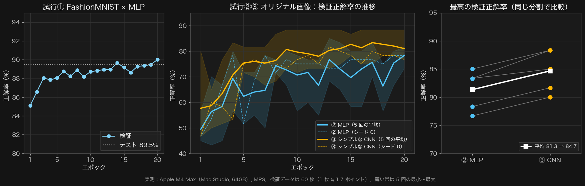

武蔵野大学データサイエンス学部 中村 亮太
本質（GW1）→ 型（GW2・GW3：コードを組み立て、MLP と CNN を比べる）→ 測定（演習1：自分のマシンを測る）。
問いは1つ：「その数字は信じられるか」
| 回 | テーマ | やること |
|---|---|---|
| 1 | AIの性能を測る | コードの組み立て（MLP・CNN）／環境ベンチマーク |
| 2 | 勾配の観測 | 3モデルの4指標／「良いAI」の順位／層別勾配ノルム |
| 3 | 過学習と評価指標 | 過学習を作る／正則化3手法 |
| 4 ★ | 再現性と分散 | シード5回／差÷標準偏差 |
| 5 | アーキテクチャ比較 | 27セルの格子を分担 |
| 6 | ショートカット学習 | 相関トークン／反転テスト |
| 7 | スケーリング則 | 16セル／外挿して当てる |
results/ に集める → ③ python course1/day1/verify.py --group <グループ番号> で OK を確認 → ④ Open-LMS の「第1回」へ自分でアップロード
uv → Python 3.12 → フォルダ取得 → 仮想環境 → 診断。全員が手順⑤まで終えたら GW1 へ。
Bash brew install uv # Homebrew が無ければ先に brew.sh から入れる uv --version # バージョンが出れば成功
Bash uv python install 3.12 uv run python -V # Python 3.12.x と出れば成功
Bash cd git clone https://github.com/RNMUDS/2026AI_TD.git AI_TD # 初回のみ cd AI_TD git pull # 2回目以降は最新に更新するだけ
Bash uv venv --python 3.12 source .venv/bin/activate # 先頭に (.venv) が付けば成功 uv pip install -r requirements.txt # 数分かかる
※ ターミナルを開き直したら cd ~/AI_TD と source .venv/bin/activate をやり直す。
Bash python setup/check_env.py # "problems": [] なら OK python setup/download_assets.py # データの取得
Bash
code .
course1/day1/ のノートブックを開く作業フォルダ: …/AI_TD と出れば成功| 症状 | 対処 |
|---|---|
uv: command not found | ターミナルを開き直す。だめなら brew doctor |
git: command not found | brew install git |
ModuleNotFoundError | source .venv/bin/activate。VS Code はカーネルを .venv に |
| カーネル一覧に .venv が無い | uv pip install ipykernel → VS Code を開き直す |
| MPS が false | uv pip install --upgrade torch |
| ダウンロードが止まる | 別の回線で再実行。だめなら教員へ |
ルールベース／機械学習／深層学習の表を埋める。特徴量と判定ルールは「人が設計」か「データから学習」か。
黄色の欄を埋める。説明文と矢印が手がかり。
| 番号 | 図 | 埋めるもの |
|---|---|---|
| GW1-2 | データの分割 | 訓練・検証・テストのどれか |
| GW1-3 | 順伝播と誤差逆伝播 | ①〜④の名前・予測値／正解値／損失・重み・バイアス |
| GW1-4 | 線形関数と非線形関数 | 線形か非線形か |
| GW1-5 | 学習と推論 | 段階の名前・重みの状態 |
| GW1-6 | 学習の1ステップ | ①〜④の名前（右の表のコードが手がかり） |
mps で Apple の GPU を使うloss.backward() の1行で勾配を自動計算する（誤差逆伝播）import torch）データ準備 → 学習設定 → 学習・評価の3フェーズに分けて並べ、①〜⑫を書く。この順が GW3 のコードの順になる。
前処理とテンソルの形状を見て、右の8つの候補から入力データの種類を選ぶ。
教科書のコード12枚が、下のカード A〜L に順不同・番号なしで載っている。ex0.ipynb には①〜⑫の空のセルが並ぶ。
| 試行 | データ | モデル | カード |
|---|---|---|---|
| ① | FashionMNIST（衣類 10 クラス） | MLP | A〜L を貼る |
| ② | オリジナル画像（2 クラス × 100 枚） | MLP | M〜Q で上書き |
| ③ | オリジナル画像 | シンプルな CNN | R で上書き |
②と③はデータが同じでモデルだけが違う。
course1/day1/ex0.ipynb を開き、GROUP_ID を書き換えて最初のセルを実行| 番号 | GW2-1 のカード名 | カード |
|---|---|---|
| ① | ||
| ② | ||
| ③ | ||
| ④ | ||
| ⑤ | ||
| ⑥ | ||
| ⑦ | ||
| ⑧ | ||
| ⑨ | ||
| ⑩ | ||
| ⑪ | ||
| ⑫ |
# 損失関数：予測と正解のずれを測る（分類で標準の交差エントロピー） criterion = nn.CrossEntropyLoss()
# 前処理：画像をテンソル（0〜1 の数値の配列）に変換する
data_transform = transforms.Compose([
transforms.ToTensor(),
])
# ミニバッチを 1 つ取り出し，形（枚数・チャネル・高さ・幅）を確かめる
imgs, _ = next(iter(train_loader))
c, h, w = imgs[0].shape
print("ミニバッチサイズ:", len(imgs))
print("チャネル数:", c)
print("画像の高さ:", h)
print("画像の幅:", w)
print(imgs.shape)
# 取り出した画像を並べて表示する
img = torchvision.utils.make_grid(imgs)
img = transforms.functional.to_pil_image(img)
display(img)
# 計算に使う装置を選ぶ：NVIDIA の GPU → Apple の GPU（mps）→ CPU の順
if torch.cuda.is_available():
device = torch.device("cuda")
elif torch.backends.mps.is_available():
device = torch.device("mps")
else:
device = torch.device("cpu")
print(f"使用デバイス: {device}")
EPOCHS = 20 # 授業では試行①②③とも 20 エポックにそろえる
# エポックごとの損失と正解率を記録するリスト
train_loss_list = []
val_loss_list = []
train_acc_list = []
val_acc_list = []
# 学習時間を測る（授業で追加）
import time
_t0 = time.perf_counter()
# EPOCHS 回，訓練データ全体を繰り返し学習する
for epoch in range(EPOCHS):
# 訓練モードにする
model.train()
train_loss = 0.0
train_correct = 0
train_total = 0
for images, labels in tqdm(train_loader, desc=f'Epoch {epoch+1}/{EPOCHS} [Train]', leave=False):
images, labels = images.to(device), labels.to(device)
# 前回の勾配を消す → 予測 → 損失を計算 → 誤差逆伝播で勾配を求める → 重みを更新
optimizer.zero_grad()
outputs = model(images)
loss = criterion(outputs, labels)
loss.backward()
optimizer.step()
train_loss += loss.item() * images.size(0)
# 最も確率の高いクラスを予測とし，正解の数を数える
_, predicted = torch.max(outputs.data, 1)
train_total += labels.size(0)
train_correct += (predicted == labels).sum().item()
train_loss /= train_total
train_accuracy = 100.0 * train_correct / train_total
train_loss_list.append(train_loss)
train_acc_list.append(train_accuracy)
# 評価モードにする：ここからは検証データで確かめる（重みは更新しない）
model.eval()
val_loss = 0.0
val_correct = 0
val_total = 0
# 勾配を計算しない（評価だけなので速く，メモリも少なくて済む）
with torch.no_grad():
for images, labels in tqdm(val_loader, desc=f'Epoch {epoch+1}/{EPOCHS} [Val]', leave=False):
images, labels = images.to(device), labels.to(device)
outputs = model(images)
loss = criterion(outputs, labels)
val_loss += loss.item() * images.size(0)
_, predicted = torch.max(outputs.data, 1)
val_total += labels.size(0)
val_correct += (predicted == labels).sum().item()
val_loss /= val_total
val_accuracy = 100.0 * val_correct / val_total
val_loss_list.append(val_loss)
val_acc_list.append(val_accuracy)
# エポックごとの損失と正解率を表示する
print(f'Epoch {epoch+1}/{EPOCHS},'
f'Train Loss: {train_loss:.4f}, Train Acc: {train_accuracy:.2f}%,'
f'Val Loss: {val_loss:.4f}, Val Acc: {val_accuracy:.2f}% ')
train_sec = time.perf_counter() - _t0
print(f'学習時間: {train_sec:.1f} 秒')
# 一度にまとめて流す枚数（ミニバッチの大きさ） BATCH_SIZE = 64 # データをミニバッチに分けて順に取り出す仕組み（訓練用は毎回並びを混ぜる） train_loader = DataLoader(train_dataset, batch_size=BATCH_SIZE, shuffle=True) val_loader = DataLoader(val_dataset, batch_size=BATCH_SIZE, shuffle=False) test_loader = DataLoader(test_dataset, batch_size=BATCH_SIZE, shuffle=False)
# 入力の数 = チャネル × 高さ × 幅（画像を 1 列に並べたときの長さ）
INPUT_SIZE = c * h * w
# 中間層（隠れ層）のニューロンの数
HIDDEN_SIZE1 = 512
HIDDEN_SIZE2 = 256
# 出力の数 = 分類するクラスの数
OUTPUT_SIZE = 10
# 層を上から順に積み重ねてモデルを作る
model = nn.Sequential(
# 画像（または特徴マップ）を 1 列のベクトルに伸ばす
nn.Flatten(),
# 全結合層：すべての入力とつながる
nn.Linear(INPUT_SIZE, HIDDEN_SIZE1),
# 活性化関数：負の値を 0 にする
nn.ReLU(),
nn.Linear(HIDDEN_SIZE1, HIDDEN_SIZE2),
nn.ReLU(),
nn.Linear(HIDDEN_SIZE2, OUTPUT_SIZE)
)
# モデルを計算装置に載せる
model.to(device)
model
model
# テストデータ（学習に使っていない 1 万枚）で正解率を求める
correct = 0
total = 0
# 勾配を計算しない（評価だけなので速く，メモリも少なくて済む）
with torch.no_grad():
for images, labels in test_loader:
images, labels = images.to(device), labels.to(device)
outputs = model(images)
# 最も確率の高いクラスを予測とし，正解の数を数える
_, predicted = torch.max(outputs.data, 1)
total += labels.size(0)
correct += (predicted == labels).sum().item()
print(f'Accuracy: {correct / total * 100:.2f}% ')
# 乱数の種を固定して，何度実行しても同じ結果になるようにする
random.seed(0)
np.random.seed(0)
torch.manual_seed(0)
torch.cuda.manual_seed(0)
if torch.backends.mps.is_available():
torch.mps.manual_seed(0)
# FashionMNIST の訓練用データ（6 万枚）を読み込む（初回はダウンロードする）
train_val_dataset = datasets.FashionMNIST(
root=str(ROOT / 'assets' / 'data'),
train=True,
download=True,
transform=data_transform
)
# テスト用データ（1 万枚．学習には使わない）を読み込む
test_dataset = datasets.FashionMNIST(
root=str(ROOT / 'assets' / 'data'),
train=False,
download=True,
transform=data_transform
)
# 訓練用データを 8:2 に分け，2 割を検証用にする
train_size = int(0.8 * len(train_val_dataset))
val_size = len(train_val_dataset) - train_size
train_dataset, val_dataset = random_split(
train_val_dataset,
[train_size, val_size]
)
print(f"訓練データ数: {len(train_dataset)} 枚)")
print(f"検証データ数: {len(val_dataset)} 枚)")
print(f"テストデータ数: {len(test_dataset)} 枚)")
# 最適化手法：損失が小さくなる向きに重みを少しずつ動かす（学習率 0.001） optimizer = optim.Adam(model.parameters(), lr=0.001)
import seaborn as sns
# グラフを描く道具
import matplotlib.pyplot as plt
# 損失と正解率の推移をグラフにする（訓練と検証を比べる）
epochs = range(1, len(train_loss_list) + 1)
plt.figure(figsize=(10, 5))
sns.lineplot(x=epochs, y=train_loss_list, label='Train Loss')
sns.lineplot(x=epochs, y=val_loss_list, label='Val Loss')
plt.title('Loss over epochs')
plt.xlabel('Epochs')
plt.ylabel('Loss')
plt.legend()
plt.grid(True)
plt.show()
plt.figure(figsize=(10, 5))
sns.lineplot(x=epochs, y=train_acc_list, label='Train Accuracy')
sns.lineplot(x=epochs, y=val_acc_list, label='Val Accuracy')
plt.title('Accuracy over epochs')
plt.xlabel('Epochs')
plt.ylabel('Accuracy (%)')
plt.legend()
plt.grid(True)
plt.show()
# PyTorch 本体と，ニューラルネットワーク・最適化・画像処理の部品を読み込む import torch import torch.nn as nn import torch.optim as optim import torchvision from torchvision import datasets, transforms from torch.utils.data import DataLoader, random_split # グラフを描く道具 import matplotlib.pyplot as plt import seaborn as sns # 処理の進み具合をバーで表示する道具 from tqdm import tqdm import random import numpy as np
# 入力の数 = チャネル × 高さ × 幅（画像を 1 列に並べたときの長さ）
INPUT_SIZE = c * h * w
# 中間層（隠れ層）のニューロンの数
HIDDEN_SIZE1 = 512
HIDDEN_SIZE2 = 256
# 出力の数 = 分類するクラスの数
OUTPUT_SIZE = 2
# 層を上から順に積み重ねてモデルを作る
model = nn.Sequential(
# 画像（または特徴マップ）を 1 列のベクトルに伸ばす
nn.Flatten(),
# 全結合層：すべての入力とつながる
nn.Linear(INPUT_SIZE, HIDDEN_SIZE1),
# 活性化関数：負の値を 0 にする
nn.ReLU(),
nn.Linear(HIDDEN_SIZE1, HIDDEN_SIZE2),
nn.ReLU(),
nn.Linear(HIDDEN_SIZE2, OUTPUT_SIZE)
)
# モデルを計算装置に載せる
model.to(device)
model
# 一度にまとめて流す枚数（ミニバッチの大きさ） BATCH_SIZE = 8 # データをミニバッチに分けて順に取り出す仕組み（訓練用は毎回並びを混ぜる） train_loader = DataLoader(train_dataset, batch_size=BATCH_SIZE, shuffle=True) val_loader = DataLoader(val_dataset, batch_size=BATCH_SIZE, shuffle=False)
# PyTorch 本体と，ニューラルネットワーク・最適化・画像処理の部品を読み込む import torch import torch.nn as nn import torch.optim as optim import torchvision from torchvision import datasets, transforms from torch.utils.data import DataLoader, random_split from torch.utils.data import Dataset # グラフを描く道具 import matplotlib.pyplot as plt import seaborn as sns # 処理の進み具合をバーで表示する道具 from tqdm import tqdm import random import numpy as np # 追加 # フォルダごとに分けた画像を読み込む道具（フォルダ名がクラスになる） from torchvision.datasets import ImageFolder
IMAGE_DIR = str(ROOT / 'assets' / 'cable1') # オリジナル画像（2 クラス × 100 枚）
# class0／class1 フォルダの画像を読み込む（ラベルはフォルダで決まる）
full_dataset = ImageFolder(root=IMAGE_DIR)
# 乱数の種を固定して，何度実行しても同じ結果になるようにする
random.seed(0)
np.random.seed(0)
torch.manual_seed(0)
torch.cuda.manual_seed(0)
if torch.backends.mps.is_available():
torch.mps.manual_seed(0)
# 全 200 枚を 7:3 に分け，訓練用と検証用にする
train_size = int(0.7 * len(full_dataset))
val_size = len(full_dataset) - train_size
train_subset, val_subset = random_split(
full_dataset, [train_size, val_size]
)
# 分けたデータに，訓練用・検証用それぞれの前処理をかけるための入れ物
class CustomDataset(torch.utils.data.Dataset):
def __init__(self, subset, transform):
self.subset = subset
self.transform = transform
def __getitem__(self, index):
image, label = self.subset[index]
if self.transform:
image = self.transform(image)
return image, label
def __len__(self):
return len(self.subset)
# 訓練用と検証用に前処理を割り当てる
train_dataset = CustomDataset(train_subset, transform=data_transforms['train'])
val_dataset = CustomDataset(val_subset, transform=data_transforms['val'])
print(f"===> Dataset Loaded: {IMAGE_DIR}")
print(f" Total samples: {len(full_dataset)}")
print(f" Train samples: {len(train_dataset)}")
print(f" Val samples : {len(val_dataset)}")
# 前処理：訓練用・検証用とも 64×64 に縮小してからテンソルに変換する
data_transforms = {
'train': transforms.Compose([
transforms.Resize((64, 64)),
transforms.ToTensor(),
]),
'val': transforms.Compose([
transforms.Resize((64, 64)),
transforms.ToTensor(),
])
}
# 入力画像のチャネル数・高さ・幅
INPUT_CHANNELS = c
IMAGE_HEIGHT = h
IMAGE_WIDTH = w
# 畳み込み層が出す特徴マップの枚数
CONV1_OUT_CHANNELS = 16
# 3×3 のフィルタで画像をなぞる．PADDING で縁を補い，POOL_SIZE で縦横を半分にする
KERNEL_SIZE = 3
PADDING = 1
POOL_SIZE = 2
POOL_NUM = 1
FC1_OUT_CHANNELS = 128
# 出力の数 = 分類するクラスの数
OUTPUT_SIZE = 2
# プーリング後の高さと幅（64 → 32）
OUT_HEIGHT = IMAGE_HEIGHT // (POOL_SIZE ** POOL_NUM)
OUT_WIDTH = IMAGE_WIDTH // (POOL_SIZE ** POOL_NUM)
# 全結合層に渡す長さ = 特徴マップの枚数 × 高さ × 幅
FLATTEN_SIZE = CONV1_OUT_CHANNELS * OUT_HEIGHT * OUT_WIDTH
# 層を上から順に積み重ねてモデルを作る
model = nn.Sequential(
# 畳み込み層：小さなフィルタで模様（特徴）を取り出す
nn.Conv2d(INPUT_CHANNELS, CONV1_OUT_CHANNELS, kernel_size=KERNEL_SIZE, padding=PADDING),
# 活性化関数：負の値を 0 にする
nn.ReLU(),
# プーリング：2×2 の中の最大値だけを残して縮小する
nn.MaxPool2d(kernel_size=POOL_SIZE),
# 画像（または特徴マップ）を 1 列のベクトルに伸ばす
nn.Flatten(),
# 全結合層：すべての入力とつながる
nn.Linear(FLATTEN_SIZE, FC1_OUT_CHANNELS),
nn.ReLU(),
nn.Linear(FC1_OUT_CHANNELS, OUTPUT_SIZE)
)
# モデルを計算装置に載せる
model = model.to(device)
# 試しに 1 枚分のデータを通し，出力の形が (1, 2) になるかを確かめる
dummy_input = torch.randn(1, INPUT_CHANNELS, IMAGE_HEIGHT, IMAGE_WIDTH).to(device)
output = model(dummy_input)
print("ダミー入力の出力サイズ:", output.shape)
print(" ↑ ")
print("torch.Size([1,2]) になることを確認してください。")
model
| 試行 | 検証正解率（最高／最終） | 学習時間 | 学習曲線の形 |
|---|---|---|---|
| ① FashionMNIST × MLP | |||
| ② オリジナル画像 × MLP | |||
| ③ オリジナル画像 × CNN |
| 試行 | 学習時間 | 検証正解率（最高／最終） |
|---|---|---|
| ① FashionMNIST × MLP | 46 秒 | 90.0% ／ 90.0%（テスト 89.5%） |
| ② オリジナル画像 × MLP | 3 秒 | 78.3% ／ 78.3% |
| ③ オリジナル画像 × CNN | 3 秒 | 81.7% ／ 76.7% |
時間は機種で変わる（MacBook Air は数倍の見込み）。正解率はほぼ同じになるはず。

ex0.ipynb の最後の欄に、それぞれ1〜2文で書く。
手がかり：nn.Linear・nn.Conv2d・nn.MaxPool2d が書かれたカードのコメント。
| 役割 | やること | 残すもの |
|---|---|---|
| implementer | コードを書く（1人だけ） | ノートブック・CSV |
| verifier | 条件を変えて再実行し、結果を疑う | 比較表 |
| recorder | エラーと討議を記録し、他グループへの質問を3問作る | 失敗記録・質問カード |
| presenter | 司会・時間管理・結論を一文で発表 | 結論（一文） |
3人：verifier が presenter を兼任。5人：collector（他グループの数値を集める）を追加。
利用は自由。ただし、出てきたコードを読み、結果を測り、数字が信頼できるかを自分で確かめる。
ex1.ipynb目的：測り方しだいで数字が変わることを、自分のマシンで確かめる。上から実行し、TODO を埋める（実行1分）。
synchronize(device) で完了を待つ| # | 内容 | TODO |
|---|---|---|
| (0)–(2) | グループ設定・インポート・機種情報 | 書き換え |
| (3) | 使用デバイスの選択 | 1 |
| (4) | 同期あり／なしの比較 | 2 |
| (5) | B1 メモリ帯域 | 3 |
| (6) | B2 演算性能 | 4 |
| (7)–(10) | B3 学習時間・メモリ・CSV 記録 | — |
| (11) | 討議 | メモ |
TODO 1：MPS が使えるか
Python
MPS_AVAILABLE = torch.backends.mps.is_available()
TODO 2：計測の前後で同期
Python synchronize(device) # 前：先の計算を終わらせる t0 = time.perf_counter() for _ in range(10): c = a @ b synchronize(device) # 後：完了を待ってから時計を読む
TODO 3・4：動いたバイト数と演算数
Python bytes_moved = 3 * n * 4 # 読み2 ＋ 書き1、float32 は4バイト flops = 2 * N ** 3 # 乗算 N³ ＋ 加算 N³
| 項目 | OK | NG なら疑うこと |
|---|---|---|
| 同期比 | MPS で明らかに1倍より大きい（CPU はほぼ1倍） | TODO 2 の同期忘れ（エラーは出ない） |
| B1 帯域 | 公称値を超えない（ノートブックが%を表示する）。同じチップどうしは近い値 | 100%超・極端に小さい → TODO 3 の式 |
| B2 演算 | グループ内の他の機種と同じ桁 | 桁が違う → TODO 4 の式 |
| 提出 | CSV にグループ全員分の行、verify.py が OK | CSV を共有していない |
参考（教員機 M4 Max）：同期比 29倍、B1 419 GB/s（公称 546 の77%）、B2 11,581 GFLOPS、B3 3.6 ms/step
| チップ | 無印 | Pro | Max |
|---|---|---|---|
| M1 | 68 GB/s | 200 | 400 |
| M2 | 100 | 200 | 400 |
| M3 | 100 | 150 | 300〜400 |
| M4 | 120 | 273 | 410〜546 |
| M5 | 153 | — | — |
min_sec を 0.2 にして、値のぶれを見るBash python course1/day1/verify.py --group 12 # OK が出るまで提出しない
| 確認項目 | |
|---|---|
| ex0 の CSV に試行①②③の3回分がある | |
| ex0.ipynb の課題（MLP と CNN の説明）を書いた | |
| 演習1 の CSV にグループ全員分の行がある | |
| 穴埋めシートと失敗記録・討議メモが手元にある | |
| zip にせず、ファイル名を変えていない |
冒頭で学習済み3モデルの正解率・損失・速度・メモリを測り、その表から「良いAI」を定義して順位を出す。後半は層ごとの勾配を記録する。